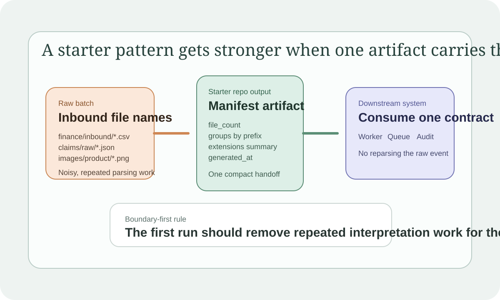

Starter Patterns Should Leave One Stable Handoff Artifact
A starter repo gets stronger when the first run leaves behind one compact artifact that a downstream system could actually consume instead of forcing every later step to re-parse the same raw input.
A lot of starter repos show the trigger and stop there. That is useful, but it still leaves the handoff vague. I keep wanting the first example to leave one stable artifact behind.
That gives the next system something concrete to trust instead of asking every downstream step to reinterpret the raw event all over again.
One artifact should carry the handoff
oci-fn-file-manifest-writer is the kind of example I want more of. The input is just a batch of file paths. The useful part is what survives the run:
- one manifest
- one file count
- one grouping shape
- one extension summary the next job can consume
That is a much better starter pattern than a sample that only says "an event arrived."

The first run should remove downstream guesswork
Good starter patterns do not need to model the entire production workflow. They should make the next handoff easier to inspect. If a downstream worker, queue consumer, or reconciliation job can read one manifest instead of reparsing five object names and inventing its own grouping rules, the starter repo has already done something real.
That is the standard I keep using. The first output should reduce repeated interpretation work later.
This is how a boundary-first repo becomes reusable
I like boundary-first starter repos because they stop at a believable seam. The stronger version also leaves behind a believable contract artifact. That might be:
- a routing decision
- a validation result
- a manifest for the next batch job
Those artifacts make it easier to attach the next real system without rewriting the boundary story from scratch.
What I keep optimizing for
If the first local run leaves behind something another system could use immediately, the sample is already stronger than most starter repos. That is usually enough proof. The rest of the production stack can come later.